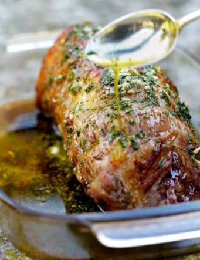

Rôti de boeuf sauce aux herbes
Une viande gourmande et parfumée.

- 5 personnes
- Préparation 15 min
- Cuisson 40 min
Ingrédients
- 1,5 kg de filet de rumsteck
- 2 gousses d'ail finement hachées
- 3 brins de romarin
- 2 à 3 feuilles de sauge
- 1 branche de thym frais
- 6 brins de persil plat
- l/2 l d'huile d'olive fruitée
Préparation
- Sortez la viande du réfrigérateur 30 mn avant de la mettre au four. Préchauffez le four sur th. 6-7/190° pendant 10 mn.
- Pendant ce temps, lavez, séchez et ciselez finement les herbes. Épluchez et hachez l’ail. Dans un bol, mélangez l’ail, le romarin, le thym, le persil et la sauge, versez l’huile d’olive, salez et poivrez. Réservez la marinade à température ambiante.
- Salez et poivrez le rôti de boeuf sur toutes les faces, placez-le dans un plat allant au four, sans matière grasse, et enfournez-le 35 à 40 mn.
- A la sortie du four, versez la marinade sur le rôti, couvrez d’un papier d’aluminium et laissez reposer 10 mn avant de servir.